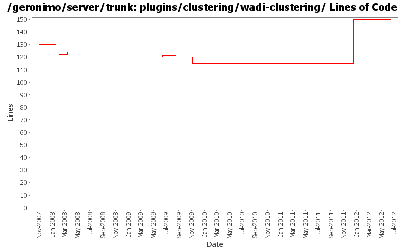

[root]/plugins/clustering/wadi-clustering
 src
(0 files, 0 lines)
src
(0 files, 0 lines)
 main
(0 files, 0 lines)
main
(0 files, 0 lines)
 history
(1 files, 89 lines)
history
(1 files, 89 lines)

| Author | Changes | Lines of Code | Lines per Change |
|---|---|---|---|
| Totals | 24 (100.0%) | 71 (100.0%) | 2.9 |
| djencks | 6 (25.0%) | 49 (69.0%) | 8.1 |
| rickmcguire | 4 (16.7%) | 6 (8.5%) | 1.5 |
| jdillon | 4 (16.7%) | 6 (8.5%) | 1.5 |
| gdamour | 4 (16.7%) | 6 (8.5%) | 1.5 |
| gawor | 1 (4.2%) | 2 (2.8%) | 2.0 |
| xiaming | 1 (4.2%) | 1 (1.4%) | 1.0 |
| kevan | 4 (16.7%) | 1 (1.4%) | 0.2 |
Update trunk version to 4.0.0-SNAPSHOT
1 lines of code changed in 1 file:
GERONIMO-6240 Modify configs so that they use features as the bootstrap, and fix a few compile and test errors. Servers build but do not fully start
35 lines of code changed in 1 file:
[maven-release-plugin] prepare release 3.0-M2
1 lines of code changed in 1 file:
[maven-release-plugin] prepare branch 3.0-M2
1 lines of code changed in 1 file:
GERONIMO-5290 fix many of the deprecation warnings from maven 3
3 lines of code changed in 1 file:
clean up the tomcat juli logging dependencies to ensure we're getting the pax version
0 lines of code changed in 1 file:
clean up the clustering plugin build
4 lines of code changed in 1 file:
GERONIMO-4655 upgrade version to 3.0-SNAPSHOT, make a few things more consistent
1 lines of code changed in 1 file:
[maven-release-plugin] prepare branch 2.2
1 lines of code changed in 1 file:
cleanup clustering/farming config property names. Patch from Rex Wang (GERONIMO-4729)
2 lines of code changed in 1 file:
GERONIMO-4684, GERONIMO-4685 Use our tomcat build, configure tomcat using server.xml. Also includes some spec jar updates including using our jaxb spec jar
9 lines of code changed in 1 file:
GERONIMO-4239, sort of. Use transitive depenedencies in c-m-p everywhere. This may break stuff.... let me know
0 lines of code changed in 1 file:
Drop *most* per-module legal muck, a few modules have additions to the standard... so left them in place for resolution later
0 lines of code changed in 2 files:
* Add two AspectJ related project and plugin:
- plugins/aspectj/geronimo-aspectj: define an AspectJLTWeaver GBean
installing a org.aspectj.weaver.loadtime.ClassPreProcessorAgentAdapter with
the TransformerCollection. Thanks to David J. who explained me how
ClassFileTransformers can be registered via GBeans; and
- plugins/aspectj/aspectj: define a configuration importing the necessary
AspectJ dependencies and register the above LTW service.
This allows application developers to easily achieve load-time-weaving of
AspectJ aspects through the definition of META-INF/aop.xml resources within
their configurations when they are children of the aspectj configuration.
Fixes GERONIMO-3922 - Addition of an AspectJ configuration enabling the
load-time-weaving of aspects defined by children configurations
* Upgrade to AspectJ 1.5.4 as suggested by Donald.
* Make wadi-clustering a child configuration of aspectj so that wadi-aop
aspects are lod-time-woven, if need be.
5 lines of code changed in 1 file:
Update LICENSE and NOTICE files. Merge from 2.1 branch
0 lines of code changed in 2 files:
Remove concurrent dependency. I haven't tested wadi clustering, with this change. But server starts fine
0 lines of code changed in 1 file:
upgrade trunk to 2.2-SNAPSHOT
1 lines of code changed in 1 file:
(GERONIMO-3747) Fixed parentage of module groups, though most still need to have their modules put into the proper groupId
Updated groupId of *everything* under framework/** to org.apache.geronimo.framework, and did my best to update all references
5 lines of code changed in 1 file:
(GERONIMO-3771) Moved maven-plugins/* to buildsupport/*, updated groupId to org.apache.geronimo.buildsupport
1 lines of code changed in 1 file:
* move classes depending on geronimo-clustering from geronimo-jetty6 to
geronimo-jetty6-clustering-wadi;
* remove geronimo-clustering dependency from geronimo-jetty6;
* do not load clustering-wadi configuration.
This way the clustering config. does not need to be used when clustering
is actually not used.
This fixes the Jetty part of GERONIMO-3721 WADI modules prevent Geronimo
from starting when offline
1 lines of code changed in 1 file:
Move to WADI version 2.0-M7 which provides a delta replication mechanism.
This fixes GERONIMO-3578 - Delta Replication of HttpSessions - Jetty
Clustered Web-Applications
Note: the aspectjrt JAR is now included in the assembly. LICENSE and
NOTICE have been updated accordingly as per Kevan's instructions.
0 lines of code changed in 2 files: